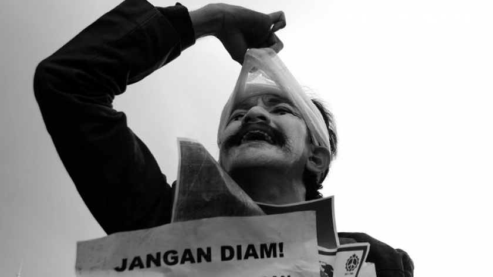

Penggusuran, Buruh, dan Perempuan
Seiring berjalannya waktu, cakupan isu yang disuarakan Aksi Kamisan Bandung semakin meluas. Para pegiat menyajikan juga isu penggusuran lahan warga, ketimpangan kesejahteraan buruh, dan bahkan ketidakadilan gender.
Dalam beberap tahun terakhir, Kota Bandung digempur oleh berbagai isu sengketa tanah yang telah memaksa sebagian warga kehilangan tempat tinggalnya. Puncaknya terjadi pada 12 Desember 2019 lalu di lahan bakal rumah deret di RW 11 Tamansari. Tragedi yang dikenal dengan sebutan “12/12” ini pun kemudian jadi salah satu isu yang disuarakan di setiap Aksi Kamisan Bandung.
Belum lama ini Aksi Kamisan juga ikut menyuarakan kasus ancaman pidana terhadap Aan Aminah, seorang perempuan buruh, dan 10 kawannya. Para buruh yang gigih menuntut pemenuhan haknya itu diseret ke meja pengadilan atas tuduhan melakukan tindak kekerasan yang di kemudian hari tidak terbukti.
“Aksi Kamisan Bandung turut andil membahas isu-isu perempuan. Aksi Kamisan ada dan berpihak pada kesetaraan hak perempuan dan isu perempuan atau feminisme lainnya,” ucap Shella Karina yang bergiat di Aksi Kamisan sejak 2016 lalu.
Shella percaya bahwa kegiatan ini telah menjadi sebuah wadah yang ramah gender. Semua kalangan bisa terlibat di sana. Ia meyakini bahwa dampak Aksi Kamisan Bandung hanya akan terus membesar.
“Karena dilakukan secara rutin, aksi ini akan membuat masyarakat yang asalnya tidak tahu menjadi tahu. Dan yang sudah tahu, akan lebih teredukasi sehingga aksinya akan semakin besar dan beregenerasi. Tiidak haya berhenti kegiatan pada hari itu,” katanya.
